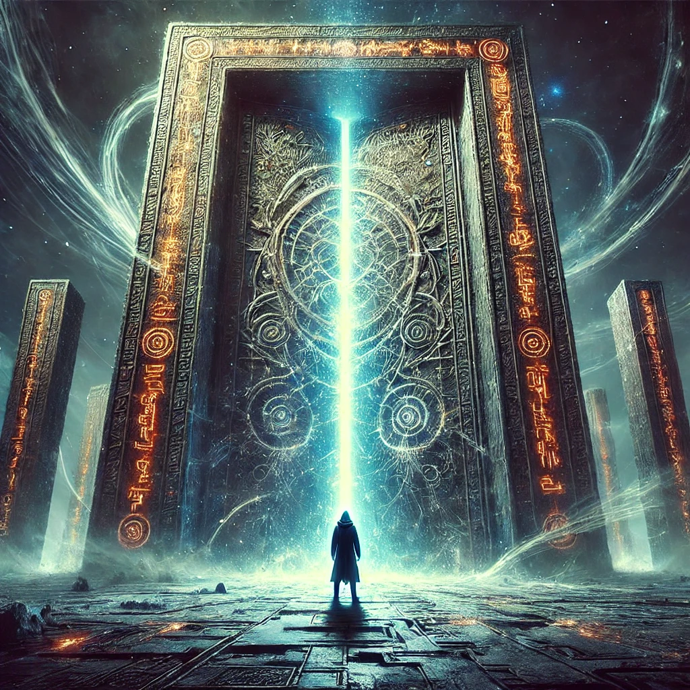

The ancient gate looms before you, its intricate carvings glowing faintly. Its power feels impenetrable, yet something within you surges—an overwhelming desire to push forward. You place your hands on the cold surface, feeling resistance, but determination drives you.
The gate responds to your touch, its glow intensifying. A low rumble fills the air, and the glyphs begin to shift, resisting your forceful attempt to open them. Whispers surround you, both warning and encouraging:
“The gate holds great power. Forcing it will reveal truths, but not without cost.”
The energy around the gate grows chaotic as you channel your will into its surface. The glyphs pulse rapidly, the air thickens, and the gate begins to crack open, revealing a blinding light. You brace yourself for what lies beyond.

How will you handle what emerges?